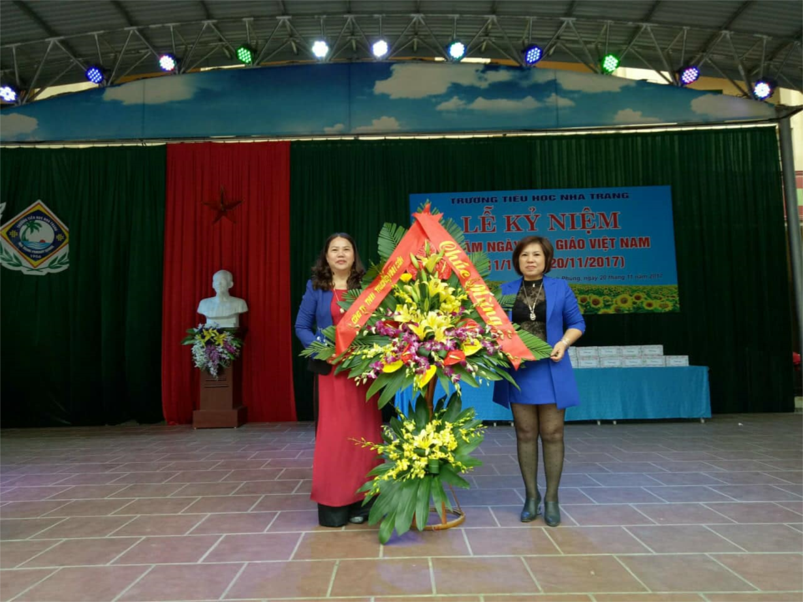
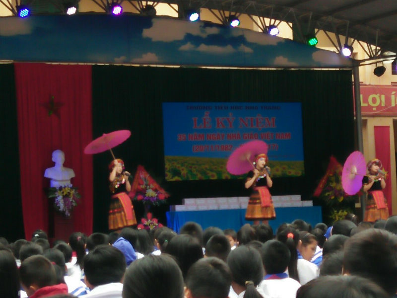
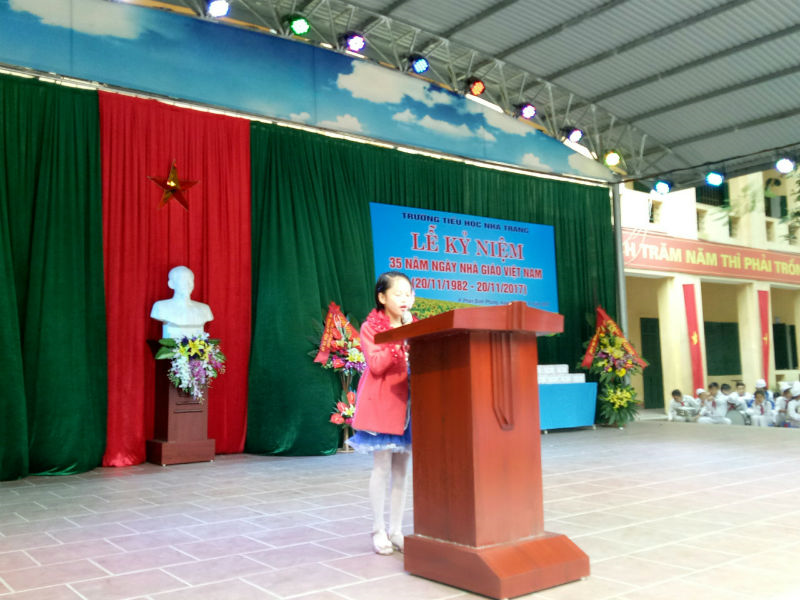
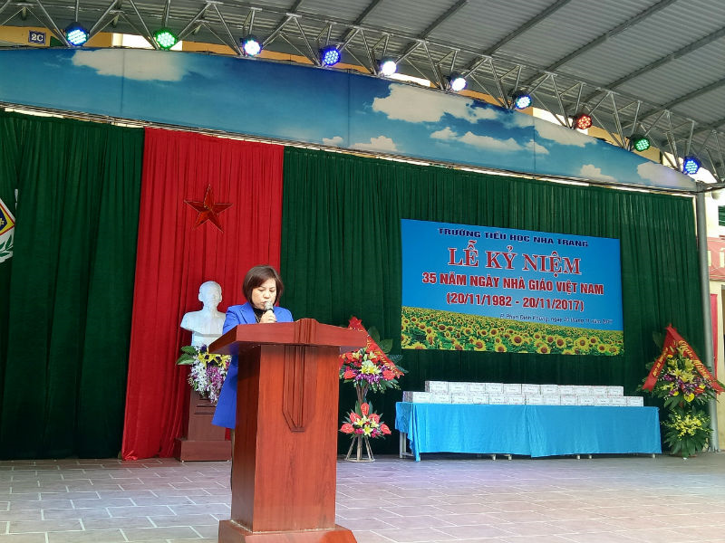
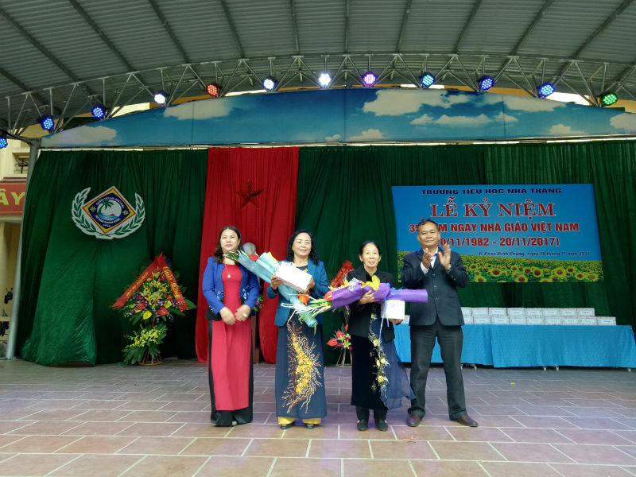
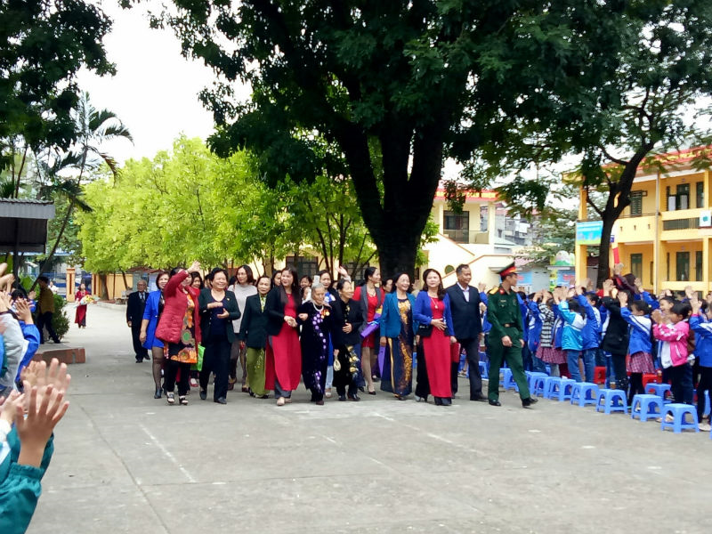
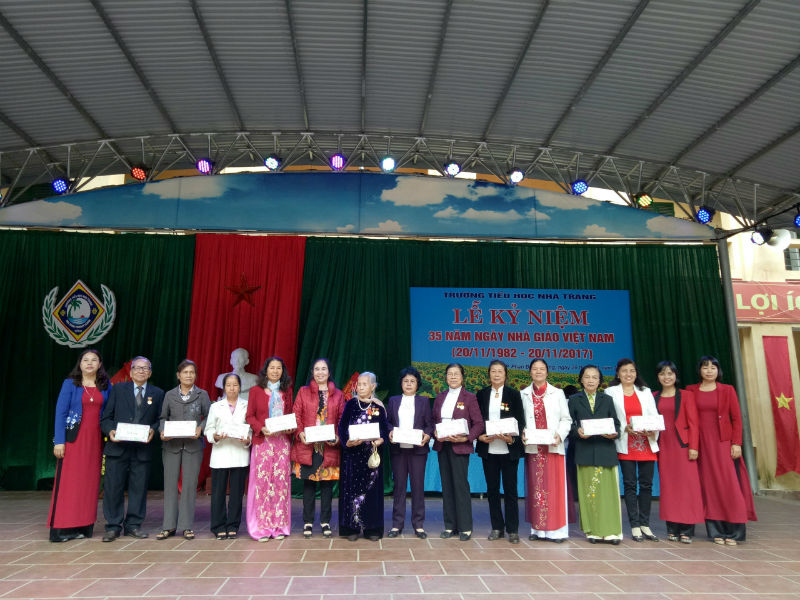
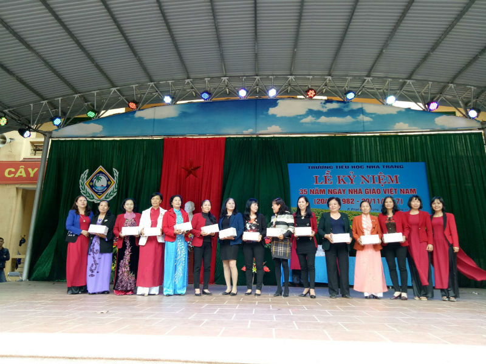

Lễ kỷ niệm 35 năm Ngày Nhà giáo Việt Nam 20/11/1982 - 20/11/2017

Tham dự buổi lễ, có đoàn lãnh đạo của phường Phan Đình Phùng do Đ/c Nguyễn Hữu Thăng – Phó bí thư TT Đảng ủy, chủ tịch HĐND phường Phan Đình Phùng thành phố Thái Nguyên làm trưởng đoàn. Đoàn Ban đại diện Cha mẹ học sinh nhà trường, các đơn vị, doanh nghiệp trên địa bàn phường. Các thầy cô giáo nguyên là lãnh đạo nhà trường qua các thời kỳ và sự hiện diện của 30 thầy cô giáo, cán bộ đã nghỉ hưu của nhà trường. Về phía Trường Tiểu học Nha Trang có cô giáo Phạm Thị Bích - Bí thư Chi bộ - Hiệu trưởng nhà trường cùng toàn thể cán bộ, giáo viên, viên chức trong nhà trường và sự có mặt của 1215 em học sinh toàn trường.

Tiết mục văn nghệ: Cô giáo bản em do các cô giáo Thùy Dương , Minh Huyền và Nguyễn Hảo biểu diễn
Sau chương trình văn nghệ chào mừng, cô giáo Phạm Thị Bích - Bí thư Chi bộ - Hiệu trưởng nhà trường đọc diễn văn chào mừng ngày hiến chương các nhà giáo. Đồng chí nhấn mạnh thực tế xã hội đã, đang và luôn mãi mãi trân trọng, tôn vinh nghề thầy giáo. Chính các thầy, các cô đào tạo ra những thế hệ học trò, những chủ nhân tương lai của đất nước, các thầy các cô đã khơi nguồn cảm hứng, động viên và đánh thức những tiềm năng ẩn sâu trong mỗi học sinh, để rồi các em sẽ tìm tòi và khám phá những giá trị thiết thực trong cuộc sống, giúp các em có thể tự tin vững bước trên con đường tương lai.
Cô giáo Phạm Thị Bích - Bí thư chi bộ - Hiệu trưởng nhà trường phát biểu khai mạc
Ngày 20/11, ngày truyền thống của ngành giáo dục Việt Nam, ngày tôn vinh những người làm công tác giáo dục, cũng chính là dịp để mọi thế hệ học trò bày tỏ lòng tri ân đặc biệt tới các thầy cô giáo, những người đã và đang miệt mài với sự nghiệp trồng người. Trong bầu không khí trang trọng và ấm áp tình thầy trò, em Vũ Thị Thảo Uyên, học sinh lớp 5G thay mặt cho toàn thể học sinh trong trường lên phát biểu cảm tưởng nhân ngày Nhà giáo Việt Nam, với những lời chức tốt đẹp nhất thể hiện tình cảm chân thành biết ơn sâu sắc nhất tới các thầy cô.

Em Vũ Thị Thảo Uyên, học sinh lớp 5G phát biểu tri ân thầy cô
Nối tiếp những lời tri ân sâu sắc của các em học sinh, bà Nguyễn Thị Châm – Trưởng ban Đại diện Cha mẹ học sinh nhà trường - thay mặt hơn một nghìn phụ huynh học sinh trong trường cảm tạ sâu sắc công lao dạy dỗ của các thầy cô đối với con em mình. Tự hào khi con em mình được học tập tại ngôi trường có truyền thống hiếu học bà Nguyễn Thị Châm cũng thay mặt các phụ huynh trong trường hứa sẽ luôn đồng hành cùng nhà trường trong sự nghiệp giáo dục của nhà trường.

Bà Nguyễn Thị Châm – Trưởng ban Đại diện Cha mẹ học sinh nhà trường phát biểu tri ân thầy cô.
Tại buổi Lễ kỷ niệm Đ/c Nguyễn Hữu Thăng - thay mặt cho lãnh đạo địa phương phát biểu biểu dương những thành tích đã đạt được của thầy và trò nhà trương trong những năm học vừa qua đồng thời động viên khích lệ nhà trường tiếp tục phát triển vững mạnh trong những năm tiếp theo.
Đ/c Nguyễn Hữu Thăng - Phó Bí thường trực đảng ủy, chủ tịch HĐND phường Phan Đình Phùng phát biểu và tặng hoa nhà trường.
Đặc biệt Ngày Nhà giáo Việt Nam hằng năm cũng là dịp để nhà trường và các thế hệ học trò tri ân các thế hệ nhà giáo đã từng cống hiến cho sự phát triển của nhà trường. Tại Lễ kỷ niệm thay mặt các thế hệ thầy – trò nhà trường, Ban giám hiệu đã gửi tặng các nhà giáo nguyên là Hiệu trưởng, Phó Hiệu trưởng và giáo viên nhà trường đã nghỉ hưu món quà và những đóa hoa tươi thắm tôn vinh những giá trị mà những thầy cô đã cống hiến cho sự phát triển của nhà trường.

Đ/c Phạm Thị Bích-Bí thư chi bộ Hiệu trưởng nhà trường, Đ/c Nguyễn Hữu Thăng Phó Bí thường trực đảng ủy, chủ tịch HĐND phường Phan Đình Phùng
tặng hoa nhà giáo Trần Thị Vượng và Đỗ THị Dung nguyên Hiệu trưởng nhà trường các thời kỳ
Lễ kỉ niệm kết thúc trong không khí phấn khởi, vui tươi, tràn ngập sắc hoa rực rỡ trong ngày Lễ tôn vinh các Nhà giáo Việt Nam, đem đến cho thầy và trò trường Tiểu học Nha trang niềm vui và ý nghĩa to lớn, tăng thêm sức mạnh để hoàn thành tốt nhiệm vụ năm học 2017-2018.

Một số hình ảnh Lễ kỷ niệm 20/11/2017
Các đại biểu trong tham gia Lễ kỷ niệm
Ban giám hiệu tặng quà các nhà giáo dã nghỉ hưu của nhà trường các thời kỳ